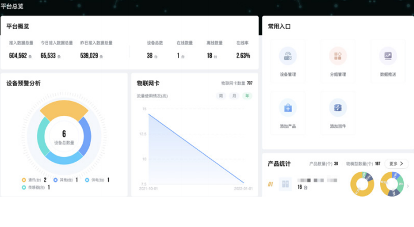

Command Center: Global Project Configuration and Visualization
Real-time, multi-dimensional presentation of the overall operational status of platform devices, including device data reporting volume, device online status, device alarms, IoT card data usage, and more. Supports various display formats such as numerical values, line charts, bar charts, etc., and can be customized according to specific requirements.